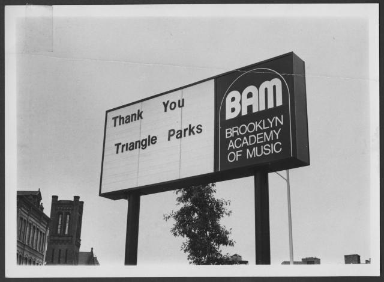

What is a Digital Archive?
According to Archival Science
Broadly speaking, digital archival material can come in two forms. Paper or analog documents that have been scanned for preservation purposes through a digitization project would be one example. BAM's Digital Archive features many examples of this, like this photo of our sign, taken circa 1975:

The other type would be what archivists refer to as "born-digital," that is, content existing only in electronic form. Anything created with a computer, including audio and moving image files, is a born-digital object.
The difference between a digital archive and the computer files you access from your home or work desktop has to do with the way we take care of the material. Content moved to the archives is designated as having historical or cultural value and once it is delivered to our hands, we begin to consider methods for keeping the material safe and intact.
For both paper and digital files, monitoring the surrounding environment is crucial. While moisture causes mold on physical material, changes in software and programming systems may lead to something called "bit-rot," or, a loss of data that prevents us from opening digital files in the future.
These definitions and other aspects of archival science have been documented in depth by the Society of American Archivists, a national association founded in 1936 to bring together librarians and archives across universities, museums, and cultural institutions. If you feel like taking a deep dive into archives, this is a good place to start.